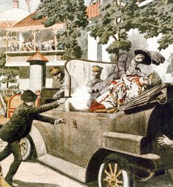

Saturday, November 30, 2013
Home, but exhausted.
Unless I get the old insomnia later on, I'm going to have no posts until tomorrow. Sorry, guys and gals, but I have to crap out on you for now.
Sorry, there won't be any posts until late today.
I'm on the road and will be back in my old haunts this evening. The house sitter reports all calm on the home front. Appreciate your prayers for safety on the road.
In the mean time, I commend to your attention Mountain Top Patriot's comments on the Heydrich assassination below. I would like to see more discussion along the lines of how such actions fit into the proper way to execute Fourth Generation Warfare in an American context if/when the regime commits the next Waco. No threats, please, just calm, reasoned discussion. The colder and more clinical the discussion of the ramifications of One Hundred Heads, the more likely it is to be taken seriously by the regime analysts, and hopefully by extension, the war makers and would-be tyrants. This is the only way we have a chance of achieving a mutual understanding that such actions will lead to assured personal destruction on the part of the war makers under the Law of Unintended Consequences -- and thus, perhaps, avoid the bloody exercise all together.
In the mean time, I commend to your attention Mountain Top Patriot's comments on the Heydrich assassination below. I would like to see more discussion along the lines of how such actions fit into the proper way to execute Fourth Generation Warfare in an American context if/when the regime commits the next Waco. No threats, please, just calm, reasoned discussion. The colder and more clinical the discussion of the ramifications of One Hundred Heads, the more likely it is to be taken seriously by the regime analysts, and hopefully by extension, the war makers and would-be tyrants. This is the only way we have a chance of achieving a mutual understanding that such actions will lead to assured personal destruction on the part of the war makers under the Law of Unintended Consequences -- and thus, perhaps, avoid the bloody exercise all together.
Friday, November 29, 2013
Operation Anthropoid.
Assassination of Reinhard Heydrich, circa 1942. Artist: Terence Cuneo. Picture: The National Archives
Great painting.
Operation Anthropoid.Operation Anthropoid was the code name for the assassination attempt on SS-Obergruppenführer and General der Polizei Reinhard Heydrich, head of the Reichssicherheitshauptamt (Reich Main Security Office, RSHA), the combined security services of Nazi Germany, and acting Reichsprotektor of the Protectorate of Bohemia and Moravia. The operation was carried out in Prague on 27 May 1942 after having been prepared by the British Special Operations Executive with the approval of the Czechoslovak government-in-exile. Although only wounded in the attack, Heydrich died of his injuries on 4 June 1942. His death led to a wave of merciless reprisals by German SS troops, including the destruction of villages and the killing of civilians. Heydrich had been a key player in the rise of Adolf Hitler; as a Nazi potentate, he was given overall charge of the Final Solution and the Holocaust of the Jews in Europe. Despite the risks, the primary purpose of Anthropoid, from the Czech perspective, was to confer legitimacy on Edvard Beneš's government-in-exile in London. -- Wikipedia.
Rocky days, rocky nights.
Sorry if I haven't been as attentive to the blog these past couple of days, but I'm having some health issues crop up again and I've been dealing with those. Hope y'all had a blessed Thanksgiving and I'll see what I can accomplish in the next few minutes. Please keep me in your prayers.
Thursday, November 28, 2013
Mrs. Gump right again. I don't know who this moron is, but he's obviously not a reader of mine.
"Stupid is as stupid does, Forrest."
Militia Leader Publicly Threatens President: “We Now Have Authority to Shoot Obama”
Southern Poverty Law Center has already noticed the moke.
He obviously doesn't read this blog.
Wednesday, November 27, 2013
John Stossel: "Be Thankful for Property." Which reminded me of my misspent youth.
William McKinley in winter, Ohio State House, Columbus. During an anti-war demonstration in the spring of 1970 or 1971, a yippie perched himself on McKinley's shoulders and yelled in response to the speakers, "Hard on, man! Hard on!"
Had today's politicians and opinion-makers been in power four centuries ago, Americans might celebrate "Starvation Day" this week, not Thanksgiving.
Actually, this reminded me of my early years, when I lived in a house just off the OSU campus in Columbus, Ohio that we shared with a large fluctuating population of hippies, yippies and "straights." My daughter Zoe just recently interviewed me on the subject for a college paper. The interview brought back lots of memories:
1. How extensive were your interactions with people who were considered "hippies"?Well, I lived in a house with them, briefly dated a girl who followed the lifestyle, observed both non-political "lifestyle" types ("hippies") and political types ("yippies") at close range for several years.2. How would you describe these people? (appearance, behavior, etc.)I am tempted to say, "stoned" and leave it at that, because drug use was a common thread with hippies and yippies. Any drugs. All drugs. All the time. They were the largest class of absolute stoners I ever met in my life. The interesting thing was that they tried to convince themselves and others that drug use was, in and of itself, a socially uplifting experience. The whole "Tune in, turn on, drop out" mantra was designed to codify a lifestyle as a cultural and political statement, which I suppose it was but it was based fundamentally on narcissism rather than a functional social structure. That is, they were for dope, as long as they could borrow it from somebody and "free sex" (rather than "free love") as long as they weren't held to any commitment (a Crosby, Stills and Nash lyric of the time covered it, "if you can't be with the one you love, love the one you're with," love being sex and permanently confused in the hippie's mind as the same thing, which it isn't). Indeed, the whole point was sex rather than love. They were all for what they called "communal living" as long as they didn't have to pay the rent, wash the clothes, buy the food, pay the utilities or absorb any of the million responsibilities of work and finance that it takes to keep a household running. (I lived in an old Victorian house on 14th Avenue in the University District of Columbus, Ohio with a fluctuating population of hippies, yippes and "straights" for more than a little while. The hippies were, almost to a man or woman, grasshoppers. The straights and, in one case, a yippie, were the "ants" that kept us from being evicted.) In appearance they differed little from the average university student of the time, tie-dyes and bell bottoms, tee shirts, long hair and facial hair on the guys (and the women's legs). The "women's liberation movement" manifested itself among the females chiefly by the absence of bras and the provision of free birth control pills at the "women's clinic" just off campus. As far as "behavior," well, they were stoners, which for us straights was either hysterically funny or tediously boring.3. Did you have any friends who were hippies?Sure. You don't think I could put up with that kind of behavior for very long in people I DIDN'T like, do you?4. Did they ever talk about promiscuity or recreational drug use?Talked, did, talked some more, did some more, changed partners, changed back. It was their raison d'être.5. When do you think the height of the hippie movement was?1967 - 1969. By 1970, they were tiring of the lifestyle and forced to face some of the unpleasant side effects of the lifestyle: overdoses, STDs, inability to maintain loving relationships in a milieu that demanded unfettered sex.6. Did they ever talk about their views on Civil Rights or the Vietnam War? And if so, what were their opinions of them?You've got to remember that these were essentially, except for the yippies, unpolitical people and frankly cultural ignoramuses and historical amnesiacs. They might go to an anti-war demonstration on a lark because everyone else was going but they found getting stoned at a rock concert to be more fun and even talked themselves into the proposition that getting stoned at a rock concert and shouting "F-CK!" along with Country Joe and the Fish WAS a political act. The Black Panthers or other serious political folks made them wet their pants (or panties) and when the tear gas started getting thrown around during the spring of 1970, the hippies and even the yippies were NOWHERE to be found. Hell, even the fraternities of jocks on 15th Avenue fought the cops in May of 1970. The stoners just stayed off the streets and complained about the pepper fog drifting in their windows.Even the yippies were at their silly best at anti-war demonstrations. There was a big anti-war march to the Ohio State House where, outside of it along High Street was a statue of William McKinley. A yippie climbed up until he was able to find a perch on McKinley's shoulders, and every time some speaker would make a point, he would cry out ironically (instead of the mantra of the day, "Right on!") "Hard on, man! Hard on!"7. Would you describe these people as having the same characteristics as the stereotypical hippie? (poor hygiene, promiscuity, extensive drug use)See above. My favorite anecdote of one my hippie roommates from this period involves a guy named Tim (he may still be alive so we'll leave out his last name) . He once got stoned on acid and/or mescaline, walked down to the intersection of 15th and High at the entrance to Ohio State, took off all his clothes and began directing traffic. In the nude, did I mention that? It was a cold day, so I doubt he impressed any girls, but he had loads of fun until the cops came along and collected him. Of course he required bail money, which us straights put up for him, since the hippies couldn't be bothered by such unhip concepts as money and jobs to raise said money (although one turned into a dope peddler -- I won't say dealer, because he was, as with all hippies, fundamentally unserious and eventually ran afoul of the serious dope dealers who took a ball bat to his right knee cap.)8. If they did discuss recreational drug use, what substances were they using and what were their opinions of them?LSD was big at the time. Mescaline and magic mushrooms were popular. Various formulations of marijuana of course. Marijuana use was universal then, even among the straights. The hard drug stuff, heroin and cocaine, came later and brought their own plagues to those who stayed with the lifestyle.
You've got to be one depraved SOB to pick an Amish family as targets for a drive-by.
Amish buggy horse killed in drive-by shooting in Pennsylvania
Weaver said the Amish are sometimes victims of harassment, and it is not uncommon for passing motorists to throw firecrackers, eggs or other food at them. One reason may be that the Amish religion includes a belief in pacifism."They're an easy target. They can't fight back," Weaver said. "If I knew why people thought that was funny, I'd be rich."
Score another one for the Senator from Alabama.
Sen. Sessions prevents Schumer's sneak attack on printed guns
However this turns out, Senator Sessions might be all that stopped S. 1774 from passing unanimously in the Senate last week, where it may otherwise have picked up enough "bipartisan" momentum to just as easily clear the House this week. On that day, at least, Sen. Sessions kept his oath.
Tuesday, November 26, 2013
Attack of the cheese-eating surrender monkeys at NSSF (again).
Industry group continues preemptive surrender tradition for ‘undetectable guns'
The National Shooting Sports Foundation (NSSF), the firearms industry’s trade association, has written letters to Congress urging both houses to reauthorize the Undetectable Firearms Act before it expires on Dec. 9, Desert Eagles Technologies reported Saturday.While a search for a press release and copies of the letters on the NSSF website did not locate the actual letters, the report is consistent with a “fast facts sheet” on “‘3D printing’ of firearms” previously issued by the group in which it asserted “The current Undetectable Firearms Act should be reauthorized.”“NSSF is concerned that new proposals that go well beyond current law could hamper federally licensed firearms manufacturers from developing prototypes using advanced or emerging technologies,” the Desert Eagles Technologies report explains.In other words, because something “worse” might be passed, it’s best to cede the point now.
"Tea party unscathed in early GOP civil war."
The Dead Elephant Party Elite vs. the Tea Party.
And while the party’s internal fight will rage on, the opening battles suggest the establishment is just starting to see how much it will take to reclaim the power it has ceded to the movement in recent years.The National Republican Senatorial Committee’s first big play: threaten to blacklist any consultant who does business with a key group taking on sitting Republicans.The result: pretty much business as usual.Meanwhile, members of Congress pleaded with corporate America to commit big money to support business-friendly candidates willing to take on the tea party.The result: early interest but no coordinated effort to take out challengers. . .
So far, the threats have done little to scare conservative activists or bring them any closer to working with the party.
A collectivist Panopticon of a country.
A long read but well worth it. "Welcome to Cuba."
Even after he took power and formed a new government, even as Che Guevara lined thousands of men and boys against the blood-soaked walls of La Cabaña and had them executed by firing squad, Castro kept his communist designs to himself. Later, however, he boasted about it with a terrifying ferocity.“They corrupt the morals of young girls!” he shouted in 1968 against Cuba’s version of hippies, “and destroy posters of Che! What do they think? That this is a bourgeois liberal regime? NO! There is nothing liberal in us! We are collectivists! We are communists! There will be no Prague Spring here!” To this day there has been no “spring” in Havana.
"If you plug it in and it doesn't go, what is it good for beyond reminding me of my ex-wife?" My latest experience with Lyman Products warranty system.
Many months ago, I borrowed a friend's Lyman Turbo 3200 tumbler to do a large job. It crapped out. Well, okay. It was now my responsibility to return it in the same shape I borrowed it, so I sent it off (when I could afford the shipping) to Lyman. In the fullness of time I received an email indicating that it had a broken motor mount and for the modest sum of $63.00, they would fix it. Okay, well it took a bit to scrape that up and I sent it to them and just received the "repaired" unit back.
So, I filled it with some media and a thousand pieces of .40 S&W brass belonging to a friend that I had volunteered to clean just to try out the unit. I plugged it in and . . . nothing. Not a twitch, not a vibe.
So I today sent it back to Lyman with a copy of the work order where they fixed the motor mount, with this scrawled across the bottom:
"That's all well and good but if you plug it in and it doesn't go, what is it good for beyond reminding me of my ex-wife? Do you mind actually FIXING the thing?"
When I get a response from Lyman, I'll let you know.
More along the lines of the Brain Gremlin's financial advice on canned food and shotguns. The "Mother of All Tapers."
Dangerous Collective Delusion at the Fed
But while the Fed was gaining much attention by saying nothing, the Chinese made a blockbuster statement that was summarily ignored. Last week, a deputy governor of the People's Bank of China said that buying foreign exchange reserves was now no longer in China's national interest. The implication that China may no longer be accumulating U.S. government debt would amount to the "mother of all tapers" and could create a clear and present danger to the American economy. But the story barely rated a mention in the American media.
The Progressive Pilfering Institute.
In collectivist terms, the sin here is only one of scale: Three years ago, the Progressive Policy Institute realized that a senior manager had quietly used unauthorized checks, credit-card charges and cash withdrawals to drain about $100,000 from the Democratic think tank’s accounts, pushing the nonprofit group to the edge of insolvency, interviews and documents show.
I mean, after all, the PPI is dedicated to stealing your money and property, how can they object when some freelancer sashays in and steals some of theirs?
So THAT's why he's still alive.
Spies worry over "doomsday" cache stashed by ex-NSA contractor Snowden
One source described the cache of still unpublished material as Snowden's "insurance policy" against arrest or physical harm.U.S. officials and other sources said only a small proportion of the classified material Snowden downloaded during stints as a contract systems administrator for NSA has been made public. Some Obama Administration officials have said privately that Snowden downloaded enough material to fuel two more years of news stories."The worst is yet to come," said one former U.S. official who follows the investigation closely.
Monday, November 25, 2013
The latest from Darryl @ AA Surplus.
The going-out-of-business sale is still on for a couple more days, and you can contact him via phone (205-699-4209) or by email at biaggibaxterATwindstream.net. The last-ditch attempt to postpone the federal surrender date until the state case has had time to be clarified is on going. Here is Darryl's latest:
A motion for a extension was filed on Friday. There was no resistance from the Feds. We are waiting to hear back from the Judge. We are asking for a extension til Jan 31st. -- Darryl
What does he know that we don't?
Fed's Tarullo details plans to counter bank runs
"Well, it's rather brutal here. Right now we are advising all our clients to put everything they've got into canned food and shotguns."
Getting cranked up for a regional -- if not a world -- war.
It marks a victory for the Shia in their growing conflict with the Sunni Muslim Middle East. It gives substantial hope to Bashar al-Assad that he will be left in power in Syria. It isolates Israel. And it infuriates Saudi Arabia and Qatar and Kuwait and other Sunni Gulf States which secretly hoped that a breakdown of the Geneva nuclear talks would humiliate Shia Iran and support their efforts to depose Assad, Iran’s only ally in the Arab world.In the cruel politics of the Middle East, the partial nuclear agreement between Iran and the world’s six most important powers proves that the West will not go to war with Iran and has no intention - far into the future - of undertaking military action in the region. We already guessed that when – after branding Assad as yet another Middle Eastern Hitler - the US, Britain and France declined to assault Syria and bring down the regime. American and British people – those who had to pay the price for these monumental adventures, because political leaders no longer lead their men into battle - had no stomach for another Iraq or another Afghanistan.
Could be, though, that the Israelis and the Saudis have other plans. "Officials: Israelis in secret trip to inspect Saudi bases. Could be used as staging ground for strikes against Iran."
See also: Arab nations silent on Iran nuclear deal.
"There is real fear that America is shedding all its responsibilities in the region, that our diplomacy has failed. We need to seek new alliances elsewhere," said the Saudi official.
"Obama FBI Partners with Left-Wing Extremist Group."

"Left-Wing Extremist Group." An excellent description of the Southern Preposterous Lie Center.
Matt Barber is outraged at the anti-Christian bias of SPLC being integrated into the military and FBI. I am tempted to say, as with all who are late to this ball: "Welcome to the party, pal!"
The List of Purged Military High Officers Under Obama
Some of these names are problematic, some not so much. If a general can't keep his dick in his pants he deserves to go. OTOH, there is somewhat of a pattern developing here.
That old Losing the Mandate of Heaven thing.
Dems worry leaders in denial on Obamacare.
Of course they'd have a lot more to worry about if the GOP leadership wasn't corrupt, compromised, spineless and, when necessary, blackmailed.
"We need our top minds on this. Get India on the phone."
This reminded me of the line from Monsters vs. Aliens that I just knew that one day I would get a chance to use: "We need our top minds on this. Get India on the phone."
Dana Carvey tweeted this:
My brother Scott sent me another funny picture. 'Tech team arrives to fix the computer glitches for Obama care!'
A deep genuflection and tip of the boonie hat to J3 for the forward. I needed that laugh.
(One day I'll get a chance to use my very favorite quote from that silly movie by General W.R. Monger: "This place is an X-file, wrapped in a cover-up and deep-fried in a paranoid conspiracy.")
"American Betrayal: The Secret Assault on America's Character."
I've got to put this book on my Christmas list. it sounds as if it was written by Doctor Richter. Why Academics Hate Diana West
It is in the nature of a totalitarian regime to try and corrupt not only its own society, but anybody within its reach. This is how they conquer the world. Communism has corrupted greater men than a few arrogant academics. Indeed, the academics turned out to be one of the easier targets. As "Sovietologists" and "Kremlinologists," their position depended on their ability to travel to Moscow, and therefore, on KGB’s good will. Having now mutated into "Cold War historians," they are dependent on having such limited access to secret archives as Moscow would choose to grant them. As academics, they are committed to their own theories, true or false. As a ‘community’, they are bound together with their corrupt colleagues, and have to defend their collective monopoly against intruders. It is for a very long time that they have been no more than a self-serving nomenklatura, caring nothing about the truth, but only about their own elevated positions. Like politicians. Like the media. Like the rest of the modern world.American Betrayal is a book about the origins of that corruption. No wonder it has been so popular with thousands of readers who are sick to death of today’s world with all its hypocrisy and lies, and long for an explanation of our moral crisis. Mrs. West sought an answer and found it. As a civilization, we have gone through a major moral disaster. We have been accomplices to mass murders. Moreover, we then tried to cover them up and to live on as if nothing happened. Without a reckoning, without so much as facing the truth about our history, we shall never recover:We condemn the German population of the police state from looking the other way from and doing nothing about the Jewish annihilation under way in Nazi concentration camps; we never ask to question ourselves living large in the free world and looking the other way from and saying nothing about ethnic, political, class and religious annihilation under way in Soviet concentration camps. This split vision derives from the triumph of Communism’s unceasing world revolution against “traditional” morality, objective morality, the morality of fixed standards by which men navigate, or at least perceive the shoals of evil and treacherous behaviors. Such morality tells us there is no separating the idea from its toll. This is the lesson we have erased from our slate.No wonder, too, that this book is hated by 'the consensus," who feel perfectly comfortable in today’s world, and see no moral crisis at all. They have never thought of the Cold War as a great battle against the ultimate evil that has changed our civilization beyond recognition. To them, the history of that battle has been no more than a comfortable job. They never saw establishing the truth about it as a sacred duty we owe to the memory of millions of victims; but merely as a matter for “gentlemanly give-and-take” between "liberals" and "conservatives," leading to a sound academic consensus.


The Latest from National Proletariat Radio: "A Special Agent's Secret Job: Hit Man."
Sunday, November 24, 2013
Another take on the Reid Putsch.

Quick Call Poison Control: Liberals Messing with Constitution
Obama and his cohorts-- like you-- really do think that governments grant rights to citizens, when in fact, governments grant nothing. Governments only derive their powers from the consent of the governed to secure rights.But in Obama’s view-- and yours-- not only do governments grant rights to citizens, he thinks that governments also have the ability to make up new rights for certain sections of the population.And here’s why he does: Obama believes that there is no such thing as natural law.And he believes this because to believe the the contrary would have to admit of some higher law or being, like God.And he must not admit of that or his scheme of government won’t work. Natural law, you see, admits of limitations to government.
See also: Reid, Democrats Play to Win Now; Delusional GOP Awaits What Future May Bring
The truth is that the Republican Senate leadership has been Reid’s silent partner in the destruction of the filibuster. On hundreds of occasions more than any other leader, Reid has conflated the Senate’s two-step voting process to diminish the filibuster with unforced concurrence of the Senate Minority Leader Mitchell McConnell Jr.
For whom the bell tolls. (It tolls for thee, Elmer.)

New campus in Waukee borders outdoor gun club
The gun club, a public facility, is a shotgun-only range, prohibiting rifles, pistols or other guns that fire greater distances. The 98-acre grounds offer trap and skeet shooting on the north side and a sporting clays field to the south.Ward said the shooting range also limits ammunition size to small No. 9 birdshot, which experts say has a maximum travel distance of about 200 yards.The construction of houses — within 350 yards of trap and skeet shooting lanes — in the Stone Prairie development prompted the club three years ago to build earthen berms that are about 6 feet tall. With some small trees on top, the berms serve as a visual buffer and reduce some sound, Ward said.The arrival of a middle school, located even closer to New Pioneer’s shooting areas, triggered more in-depth talks between the gun club and its new neighbors.
The outlines of Old Yellowstain's sellout on immigration.

Pelosi open to piecemeal approach on immigration.
Obama and Pelosi don't care how many pieces the salami gets sliced into, as long as they get the whole meal. Chef Boehner is happy to comply.
“It’s only new if you have been aggressively ignoring the epidemic of black mob violence around the country.”
A faithful reader forwards a link with the comment: "N.Y. Times Tries to Spin Surge in "Knock-out Game" Racial Attacks as an Urban Myth."
He highlights these quotes from the story:
"The attack added to a growing log of reports of such crimes in the Northeast and beyond. Young assailants were randomly picking unlucky targets and trying to knock them out with just one punch."
And:
"And in New York City, police officials are struggling to determine whether they should advise the public to take precautions against the Knockout Game — or whether in fact it existed."
And:
The reader comments:“We keep getting asked that question,” he said, of the Knockout Game, “and there is no noticeable trend.”
Meanwhile, the alternative media has been reporting the FACTS on the obvious surge in black on white "thrill" violence for many months:
Surprise! Media finally wake up to Knockout Game.
“It’s only new if you have been aggressively ignoring the epidemic of black mob violence around the country,” said Sherry Godfrey, of Springfield, Mo. “But it happened to my son and I had no idea it was happening around the country until I researched it and found the book “White Girl Bleed A Lot.” For reporters willing to look, hundreds of examples are easy to find – though more often the perpetrators are identified as “unruly teens” or “rambunctious” rather than creators of racial violence and mayhem.
LATER: See also "Knockouts High and Low. Without self-restraint, we slip toward barbarism" who makes the connection between C.S. Lewis, the Knockout Game and Harry Reid's "Nuclear Option."
On November 22, 1963, two other notable men died, and got relegated to the foot of page 37 — the British authors C. S. Lewis and Aldous Huxley. Lewis endures because of the Narnia books (and films), but there’s a lot more in the back of his wardrobe. In his book The Abolition of Man, he writes of “men without chests” — the chest being “the indispensable liaison” between the head and the gut, between “cerebral man” and “visceral man.” In the chest beat what Lewis calls “the trained emotions.” Without them there is no honor or virtue, but only “intellect” and/or “appetite.”
Further down:
Restraint is an unfashionable concept these day, but it is the indispensable feature of civilized society. To paraphrase my compatriot George Jonas, punching a spinster’s lights out isn’t wrong because it’s illegal, it’s illegal because it’s wrong. But, in a world without restraints, what’s to stop you? If a certain percentage of your population feels no moral revulsion at randomly pulverizing fellow citizens for sport, a million laws will avail you naught: The societal safety lock is off.That’s “visceral man.” What about Lewis’s “cerebral man”? In free nations, self-restraint is required not only of the underclass but of the rulers, too. Harry Reid is an unlikely gang leader, but, for a furtive little rodent, he landed a knockout punch on America’s governing norms. Like the lil’ old lady, Mitch McConnell never saw it coming. One minute, the time-honored practice that judicial appointments required supermajorities was there; the next, it was lying on the ground dead. Yes, yes, I know Senate procedural rules aren’t quite as gripping as “polar-bearing.” But, as I said, a free society requires self-restraint at all levels. Forget the merits of Reid’s move to simple majority rule, and simply consider how he did it.
For whom the bell tolls. A fugitive from the law of averages. I guess he just looks guilty.
Florida police accused of racial profiling after stopping man 258 times, charging him with trespassing at work.
In the last four years Earl Sampson, 28, has been questioned by police 258 times, searched more than 100 times, jailed 56 times, and arrested for trespassing 62 times. The majority of these citations occurred at his place of work, a Miami Gardens convenience store where the owner says police are racially profiling.
You know, being stopped that many times by jumpy cops, I guess he should be grateful he hasn't been shot yet. Talk about being a fugitive from the law of averages.
Ridiculous.
California Lawmakers Introduce Law That Would Force Manufacturers to Paint Toy Guns Bright Colors
You know, when he was the tender age of 5 I gave my son Matt a US Army full size Kalashnikov training aid made entirely of black rubber. I painted it to look even more real. I guess that would be enough to get a five-year old shot in California these days.
Saturday, November 23, 2013

Still rocky from the reintroduction of the chemotherapy.
So if I have no more posts today, you know why. Will try to update later.
C.S. Lewis, Hot Off the Presses
When C.S. Lewis died 50 years ago today, he thought his works were likewise not long for this world. The famous professor, who had graced the cover of Time magazine and delivered radio broadcasts heard by most Britons (the original title of Mere Christianity was Broadcast Talks), thought popular memory of him would linger for five years, give or take. Then he would belong to the specialists.
Book critic Michael Dirda joked of this comically pessimistic assessment, "Lewis was clearly no prophet." However, give Lewis this much: it would be hard even for a drunken optimist to foresee the success that he has enjoyed since his passing.All of Lewis's books are still available, sold to and read by millions of people around the globe. His life and writings are the subject of serious study by scholars and laymen. Movies based on his Chronicles of Narnia series have grossed about $1.6 billion.In fact, Lewis is not only still in print 50 years later, but still publishing new works.
MBV Note: Lewis' Mere Christianity was on Doctor Richter's list, as was The Screwtape Letters.
Too much truth for college students to handle? Duquesne University, a nominally Catholic institution, censors a poster critical of communism. Go figure.

University Forbids Poster That Takes A Stand Against Communism.
"A poster meant to illustrate the number of individuals who have been murdered by collectivist governments was deemed too harsh by officials at Duquesne University, which disallowed the image from hanging on campus."
Mike McNulty: Votes don't matter when rights are at stake
The problem with the current process is that last year's crop of statists in the Legislature behaved as if Colorado was a "democracy" and trampled the rights of what was perceived a minority, gun owners. The statists soon discovered that we do live in a republic, with the recall and removal of two of the worst offenders of rights. A republic indeed -- not a democracy with tyrannical rule of the majority over the minority. It seems that if you're a politician these days, it would obviously pay to listen to all of the citizens, all of the time, be they a perceived majority or a minority, Bloomberg not withstanding.
Mike McNulty, readers may recall, was the driving force behind the Waco documentary Waco: The Rules of Engagement, as well as the follow-up films, Waco: A New Revelation and The FLIR Project. His COPS Productions link is here.
Are you D2, or do you just know them intimately? Read this article and file it away for future reference. The domestic political police spies of the FBI and their interface with AT&T et. al.

Meet the Spies Doing the NSA's Dirty Work.
MBV: Remember that. AT&T.With every fresh leak, the world learns more about the U.S. National Security Agency's massive and controversial surveillance apparatus. Lost in the commotion has been the story of the NSA's indispensable partner in its global spying operations: an obscure, clandestine unit of the Federal Bureau of Investigation that, even for a surveillance agency, keeps a low profile.When the media and members of Congress say the NSA spies on Americans, what they really mean is that the FBI helps the NSA do it, providing a technical and legal infrastructure that permits the NSA, which by law collects foreign intelligence, to operate on U.S. soil. It's the FBI, a domestic U.S. law enforcement agency, that collects digital information from at least nine American technology companies as part of the NSA's Prism system. It was the FBI that petitioned the Foreign Intelligence Surveillance Court to order Verizon Business Network Services, one of the United States' biggest telecom carriers for corporations, to hand over the call records of millions of its customers to the NSA.But the FBI is no mere errand boy for the United States' biggest intelligence agency. It carries out its own signals intelligence operations and is trying to collect huge amounts of email and Internet data from U.S. companies -- an operation that the NSA once conducted, was reprimanded for, and says it abandoned.The heart of the FBI's signals intelligence activities is an obscure organization called the Data Intercept Technology Unit, or DITU (pronounced DEE-too). The handful of news articles that mentioned it prior to revelations of NSA surveillance this summer did so mostly in passing. It has barely been discussed in congressional testimony. An NSA PowerPoint presentation given to journalists by former NSA contractor Edward Snowden hints at DITU's pivotal role in the NSA's Prism system -- it appears as a nondescript box on a flowchart showing how the NSA "task[s]" information to be collected, which is then gathered and delivered by the DITU.But interviews with current and former law enforcement officials, as well as technology industry representatives, reveal that the unit is the FBI's equivalent of the National Security Agency and the primary liaison between the spy agency and many of America's most important technology companies, including Google, Facebook, YouTube, and Apple.The DITU is located in a sprawling compound at Marine Corps Base Quantico in Virginia, home of the FBI's training academy and the bureau's Operational Technology Division, which runs all the FBI's technical intelligence collection, processing, and reporting. Its motto: "Vigilance Through Technology." The DITU is responsible for intercepting telephone calls and emails of terrorists and foreign intelligence targets inside the United States. According to a senior Justice Department official, the NSA could not do its job without the DITU's help. The unit works closely with the "big three" U.S. telecommunications companies -- AT&T, Verizon, and Sprint -- to ensure its ability to intercept the telephone and Internet communications of its domestic targets, as well as the NSA's ability to intercept electronic communications transiting through the United States on fiber-optic cables. . .
The DITU falls under the FBI's Operational Technology Division, home to agents, engineers, electronic technicians, computer forensics examiners, and analysts who "support our most significant investigations and national security operations with advanced electronic surveillance, digital forensics, technical surveillance, tactical operations, and communications capabilities," according to the FBI's website. Among its publicly disclosed capabilities are surveillance of "wireline, wireless, and data network communication technologies"; collection of digital evidence from computers, including audio files, video, and images; "counter-encryption" support to help break codes; and operation of what the FBI claims is "the largest fixed land mobile radio system in the U.S."The Operational Technology Division also specializes in so-called black-bag jobs to install surveillance equipment, as well as computer hacking, referred to on the website as "covert entry/search capability," which is carried out under law enforcement and intelligence warrants. . .
According to former law enforcement officials and technology industry experts, the DITU is among the most secretive and sophisticated outfits at Quantico. The FBI declined Foreign Policy's request for an interview about the unit. But in a written statement, an FBI spokesperson said it "plays a key role in providing technical expertise, services, policy guidance, and support to the FBI and the intelligence community in collecting evidence and intelligence through the use of lawfully authorized electronic surveillance."In addition to Carnivore, the DITU helped develop early FBI Internet surveillance tools with names like CoolMiner, Packeteer, and Phiple Troenix. One former law enforcement official said the DITU helped build the FBI's Magic Lantern keystroke logging system, a device that could be implanted on a computer and clandestinely record what its user typed. The system was devised to spy on criminals who had encrypted their communications. It was part of a broader surveillance program known as Cyber Knight. . .
Lately, one of the DITU's most important jobs has been to keep track of surveillance operations, particularly as part of the NSA's Prism system, to ensure that companies are producing the information that the spy agency wants and that the government has been authorized to obtain.The NSA is the most frequent requester of the DITU's services, sources said. There is a direct fiber-optic connection between Quantico and the agency's headquarters at Fort Meade, Maryland; data can be moved there instantly. From the companies' perspective, it doesn't much matter where the information ends up, so long as the government shows up with a lawful order to get it."The fact that either the targets are coming from the NSA or the output goes to the NSA doesn't matter to us. We're being compelled. We're not going to do any more than we have to," said one industry representative.But having the DITU act as a conduit provides a useful public relations benefit: Technology companies can claim -- correctly -- that they do not provide any information about their customers directly to the NSA, because they give it to the DITU, which in turn passes it to the NSA.
But in the government's response to the controversy that has erupted over government surveillance programs, FBI officials have been conspicuously absent. Robert Mueller, who stepped down as the FBI's director in September, testified before Congress about disclosed surveillance only twice, and that was in June, before many of the NSA documents that Snowden leaked had been revealed in the media. On Nov. 14, James Comey gave his first congressional testimony as the FBI's new director, and he was not asked about the FBI's involvement in surveillance operations that have been attributed to the NSA. Attorney General Eric Holder has made few public comments about surveillance. (His deputy has testified several times.)The former law enforcement official said Holder and Mueller should have offered testimony and explained how the FBI works with the NSA. He was concerned by reports that the NSA had not been adhering to its own minimization procedures, which the Justice Department and the FBI review and vouch for when submitting requests to the Foreign Intelligence Surveillance Court."Where they hadn't done what was represented to the court, that's unforgivable. That's where I got sick to my stomach," the former law enforcement official said. "The government's position is, we go to the court, apply the law -- it's all approved. That makes for a good story until you find out what was approved wasn't actually what was done."
Friday, November 22, 2013
"Where's Lee Harvey Oswald when we need him?" Dead, thank the Lord.
I was in a local grocery store today and, as usual, the folks in line were cussing Obama. An old geezer, probably pushing 80 if he was a day and probably mindful of today's anniversary, said "Where's Lee Harbey Oswald when we need him?" I was three places back in line, but I spoke up loudly and said, "Dead, thank God. The last thing we need is for somebody to make a martyr out of that socialist putz in the White House." There was universal agreement in the checkout line on that point anyway.
Back in 2008, I wrote a piece entitled "Assassination" for David Codrea's blog The War on Guns. (You might want to check out his Examiner column today on the same subject, "Armed insurrectionist recalled on 50th anniversary of JFK assassination." ) On 14 March 2010, I reprinted my original post here on Sipsey Street as a Redux.
Given that ordinary folks are so cavalierly talking about the assassination of Obama in line at the grocery store, it seemed like a good idea to reprint it once more:
ASSASSINATION REDUX


The assassination of Archduke Ferdinand set off World War One and led to the deaths of millions.Folks,
A little over two years ago, I wrote the guest essay below for David Codrea's War on Guns blog. I think it bears repeating.
Mike
III
Guest Editorial: Assassination
by Mike Vanderboegh
26 February 2008


Oswald poses with his Mannlicher Carcano.
PART ONE
"Assassination has never changed the history of the world” -- Prime Minister of Great Britain Benjamin Disraeli (1804 - 1881)
"Juggernaut"
Disraeli didn't live long enough to witness the reaction to the assassination of the Archduke Ferdinand in 1914 -- which swept away the entire world that Disraeli knew and left millions of dead rotting in muddy graves. If he had, he might have changed his mind about the power of assassination to work evil in the world far beyond the corpse of a single victim.
As we live in a nation of historical amnesiacs, I doubt that one American in a thousand has ever heard of Herschel Feibel Grynszpan. I have, and I thought of him as I watched one of Barack Hussein Obama's flights of charismatic oratory the other day. Here's a sample:
"... a light will shine through that window, a beam of light will come down upon you, you will experience an epiphany ... and you will suddenly realize that you must go to the polls and vote for Obama" - Barack Obama, Lebanon, New Hampshire, January 7, 2008.
Obama, it seems clear at this writing, will be the nominee of the Democrat party in this election. Forget the "Obamamania"; forget the fainting teenage girls in scenes reminiscent of Elvis, the Beatles or Hitler; forget the messianic lines such as those above; forget the fact that the "old bulls" of the Democrat party have finally decided that the eternal traveling soap opera of the Clinton co-presidency is an embarrassment they can do without. Forget all that and remember this:
In January, Mr. Obama raised a stunning $36.1 million in contributions from individuals, more than 2.5 times the $13.8 million that Mrs. Clinton raised from individuals last month. To fully appreciate Mr. Obama's feat, let's put his January windfall in perspective. Recall that Howard Dean emerged as the frontrunner for the Democratic presidential nomination at the end of 2003 in large part because he had raised $40.9 million from individuals during the entire year. In the single month of January, Mr. Obama raised 88 percent of Mr. Dean's 2003 total. And, by all indications, he did so without breaking a sweat. Moreover, if a stiff like John Kerry, who managed to raise only $19.4 million from individual contributions throughout 2003, was then able to raise a mind-boggling $180 million during the five months (March-July in 2004) after he sewed up the Democratic nomination, imagine how many hundreds of millions of dollars Mr. Obama will be able to raise before the Democratic National Convention in late August if he knocks Mrs. Clinton out in Ohio and Texas on March 4. No wonder he is running from his commitment to accept public funding for the general election if the Republican nominee agreed to do so. -- Washington Times editorial, "Obama's Financial Juggernaut," 24 February 2008.
If money is the ammunition of American politics as practiced in the early 21st Century (and it is), Hillary is about to go down in a shootout that will look like the final scene of Butch Cassidy and the Sundance Kid -- with Obama playing the part of the Bolivian Army. Indeed, John McCain will likely also be far outgunned in the general election, which by all accounts has already begun. Hillary, say those who study the minutiae of American politics, is a dead candidate walking and John McCain ain't feeling too good either. (See Michael Barone's "The General Begins," 23 February 2008)
So, (to use an old phrase of Louisiana politics) unless someone comes up with pictures of Obama in bed with a live boy or a dead girl (and Teddy Kennedy could probably even help Barack out with THAT one) OR Osama's boys go nuclear in New York, Barack Hussein Obama is going to be the next President of the United States. Unless, that is, he meets up with a modern cousin of Herschel Feibel Grynszpan on his way to the Oval Office.

Herschel Grynszpan.
"Kristallnacht"
The son of Polish Jews who emigrated to Germany in 1911, Herschel Grynszpan was born in Hanover in 1921, where his father Sendel had a modest tailor's shop. Herschel had an elder sister, Esther, and brother, Mordechai. After Hitler came to power, the Grynszpan family began to suffer persecution. To keep their oldest son safe, in 1936 Sendel and Berta sent the 15 year old Herschel to Belguim to live with his uncle and aunt. Shortly afterward, Herschel crossed illegally into France seeking work, moving to Paris. He spent the next two years trying to get legal residence in France, without which he could not work or study legally, but was rejected by French officials. His reentry permit for Germany expired in April 1937 and his Polish passport expired in January 1938, leaving him without legal papers. Meanwhile, his family's position back in Germany was becoming desperate. The Nazi boycott of Jewish shops was killing his father's tailoring business and his siblings lost their jobs. On 26 October, the Gestapo was ordered to arrest and deport immediately all Polish Jews in Germany.
The Grynszpans were among the estimated 12,000 Polish Jews arrested, stripped of their property and herded aboard trains headed for Poland. When they got to the border, they were forced to walk two kilometers to the Polish border town of Zbszyn. But the Poles, every bit as anti-Semitic as the Nazis, refused to admit them. The Grynszpans and thousands of other Polish-Jewish deportees were left stranded at the border, fed only occasionally by the Polish Red Cross and Jewish welfare organizations. It was from Zbszyn that Berta Grynszpan sent a postcard to Herschel in Paris, telling him what had happened and pleading with him to rescue them and arrange for them to emigrate to America - which was an impossibility. Berta's postcard reached Herschel on Thursday 3 November. Herschel decided to avenge his parents' persecution.
Four days later Herschel wrote a farewell postcard to his parents and went to a gunshop where he bought a 6.35mm pistol and a box of 25 rounds, for 235 francs. He then walked to the German Embassy and went inside, asking to see an embassy official -- he later said he had wanted to kill the German ambassador. The clerk on duty asked Ernst vom Rath, a junior embassy official, to see him. When Grynszpan entered vom Rath's office, he pulled out his gun and shot vom Rath three times in the abdomen. He shouted "You're a filthy boche" and said he was acting in the name of 12,000 persecuted Jews. Grynszpan made no attempt to resist or escape. He freely confessed to shooting vom Rath, who died two days later. Grynszpan said that his motive for doing so was to avenge the persecuted German Jews. Ironically, vom Rath was in fact an anti-Nazi and was under investigation by the Gestapo at the time of his death. Heck, he wasn't even an anti-Semite but he died just the same.
The Nazis had been planning to let loose their Brownshirts on the Jewish community for some time. Grynszpan's act was just the excuse they were looking for. Vom Rath died on the fifteenth anniversary of the Munich Beer Hall Putsch of 1923, the greatest day of the Nazi calendar. That night Propaganda Minister Joseph Goebbels made an incendiary speech to veteran Nazis at the Bürgerbräukeller beer hall in Munich. Goebbels hinted that there might be "spontaneous outbursts" against the Jews. The assembled Nazi leaders needed no further encouragement.
Thus began the anti-Jewish pogrom known as the "Night of Broken Glass," or in German, "Kristallnacht." On the night of 9-10 November 1938 the Nazis fanned out across Germany. During Kristallnacht over 7,500 Jewish shops were destroyed and 400 synagogues were burnt down. More than 1 billion Reichsmarks' damage to property was reported - and Jews were unable to file insurance claims for property losses. Ninety-one Jews were killed and more than 30,000 were sent to concentration camps (where over a thousand died within a short time of beatings, outright murder and disease). The rest were released some months later. Those who could, left Germany after that. The ones who didn't perished later with all their kin in the Holocaust. Herschel Grynszpan set out to make an anti-Nazi gesture, inadvertently killed an anti-Nazi, and gave the Nazis the excuse for the first nationwide assault on the Jews. It was the Law of Unintended Consequences writ large. And it was only the beginning. As William Shirer wrote in Rise and Fall of the Third Reich:
On the flaming, riotous night of November 9, 1938, the Third Reich had deliberately turned down a dark and savage road from which there was no return, A good many Jews had been murdered and tortured and robbed before, but these crimes, except for those which took place in concentration camps, had been committed mostly by brown-shirted rowdies acting out of their own sadism and greed while the State authorities looked on, or looked the other way. Now the German government itself had organized and carried out a vast pogrom. The killings, the looting, the burning of synagogues and houses and shops on the night of November 9 were its doing. So were the official decrees, duly published in the official gazette, the Reichsgesetzblatt . . . which fined the Jewish community a billion marks, eliminated them from the economy, robbed them of what was left of their property and drove them toward the ghetto -- and worse." (Page 434)
Gerald Schwab, who witnessed the events of Kristallnacht as a German Jewish boy and who later researched the case, titled his 1990 book The Day the Holocaust Began, as indeed it did. One wonders what Grynszpan made of the awful result of his assassination of vom Rath. We cannot know because two years later, after the fall of France, Herschel passed into German custody and thereafter disappeared into what the Nazis called "Nacht und Nebel" -- Night and Fog. Never heard of "Night and Fog?":
"After lengthy consideration, it is the will of the Führer that the measures taken against those who are guilty of offenses against the Reich or against the occupation forces in occupied areas should be altered. The Führer is of the opinion that in such cases penal servitude or even a hard labor sentence for life will be regarded as a sign of weakness. An effective and lasting deterrent can be achieved only by the death penalty or by taking measures which will leave the family and the population uncertain as to the fate of the offender. Deportation to Germany serves this purpose." -- Reichsfuhrer SS Heinrich Himmler, Nacht und Nebel Decree to the Gestapo, 7 December 1942.
Field Marshall Wilhelm Keitel ordered: "The prisoners are, in future, to be transported to Germany secretly, and further treatment of the offenders will take place here; these measures will have a deterrent effect because - A. The prisoners will vanish without a trace. B. No information may be given as to their whereabouts or their fate."
Having served the Nazis unintentionally but well, Grynszpan vanished into the Nacht und Nebel. Grynszpan apparently died in one of their camps in the final year of the war. In one final ironic twist, Grynszpan's parents -- who had been so concerned about Herschel's safety that they sent him to "safety" within pistol range of vom Rath -- survived the war.
The Last Crossroad, or, Take Another Spin Around Dealey Plaza
"If I were Barack Obama, I wouldn't walk my dog in Fort Marcy Park." -- Neal Boortz.
Boortz's crack was obviously directed at the Clintons, who have a history, as they say. Personally, I think Obama can survive the Clintons. Their old voodoo has lost its juju, and one almost pities them in their bewilderment as Obama dances around their already-dug political graves -- almost. What is unclear at this point is whether Obama can survive the other dark forces lurking under the surface of our body politic.
We are coming up on a crossroads in our Republic's long journey, perhaps the last crossroads -- one fork of which can lead to "Kristallnacht" and "Nacht und Nebel." To the power-hungry elites who are tired of tiptoeing around the sensibilities (and latent power) of the American armed citizen to achieve their goals, Barack Obama may be worth more dead than alive.
Obama's friends and supporters have long worried about the target painted on his back. In an Associated Press story that ran a couple of days ago, David Crary reports:
For many black Americans, it's a conversation they find hard to avoid, revisiting old fears in the light of bright new hopes. They watch with wonder as Barack Obama moves ever closer to becoming America's first black president. And they ask themselves, their family, their friends: Is he at risk? Will he be safe? . . . But concern about Obama's safety transcends racial lines. He has white supporters who see him as an inspiring, youthful advocate of change in the mold of Robert F. Kennedy, and they are mindful of Kennedy's assassination just two months after King's. Pam Hart, the principal of a multiracial elementary school in the Philadelphia suburb of Cheltenham, said she is struck by the contrast between some of the black students there, innocently excited about Obama's candidacy, and the more anxious perspective of older people who lived through the violence of the 1960s. "My 70-year-old aunt—every time I call her, she says she's really afraid Obama is going to be assassinated. She is so worried that history will repeat itself," said Hart. (Source: http://www.breitbart.com/article.php?id=D8UVHBRO2&show_article=1)
Indeed, Monica Guzman, a liberal blogger at http://blog.seattlepi.nwsource.com/, reports that "An ugly topic is capturing attention on the Internet: Today the phrase 'assassinate Obama' appeared on a list of the top 100 Google search terms."
Guzman worries that reporting on the possibility of Obama's assassination will make it a fact. Other folks see Biblical prophecy at work. At http://www.satansrapture.com/ , Harry Walther claims that he has decoded the Bible to predict this headline:
"BIBLE CODE: OBAMA ASSASSINATED; HILLARY CLINTON WINS AS PRESIDENT, WELCOMES ANTICHRIST 2010 AD."
Whatever you may think of Harry's Bible scholarship (and I don't presume to know the will of God myself) Walther does have some good advice straight out of the book of Luke: "Watch and be ready . . .Pray always that you are accounted worthy to escape all these things and stand before the Son of God." (Luke 21: 34-36.)
That's certainly good advice for Obama, given that everybody including his friends are discussing his potential imminent demise. Witness this excerpt from New York Times reporter Jeff Zeleny's "Hushed Worry About Obama's Safety":
Here in Dallas, those memories were raised in conversation after conversation with several of the 17,000 people who came to see Mr. Obama at a rally last week. “Right around the corner is the John Kennedy Memorial; everyone all around me was talking about it,” said Imogene Covin, a Democratic activist from Dallas. “In the back of my mind, it’s a possibility that something might happen because he’s something to gawk at right now. But you know why I think he will be safe? He has a broad range of people behind him.” That afternoon, Mr. Obama’s motorcade passed Dealey Plaza and the Texas Book Depository building, where the fatal shot was fired at President Kennedy in 1963. Several campaign aides looked out their windows, silently absorbing the scene. Not so for Mr. Obama, who later said he had not realized he was passing the site. And no one in his car pointed it out. “I’ve got to admit, that’s not what I was thinking about,” he said. “I was thinking about how I was starting to get a head cold and needed to make sure that I cleared up my nose before I got to the arena.” (NYT, 25 February 2008)

PART TWO
"Cui Bono?"
Of course the assassination of Barack Obama would play into the most hackneyed prejudices of the collectivist left and the "mainstream" news media who serve their interests. Not that Obama isn't an object of great concern to those of us who revere the Founders' Republic. As Bob Owens and other gun rights activists have pointed out, Obama is profoundly anti-freedom when it comes to firearms. (See http://pajamasmedia.com/2008/02/obama_shooting_himself_in_the.php) This gun-grabbing tendency of Obama's may play a role in the general election, especially if the Heller decision goes against an individual interpretation of the Second Amendment. Of course, he has to make it to November for that to be an issue.
In addition, there is something about Obama's mesmerized followers and lack of substance that frightens many thoughtful folks. "By the Lord above, Mike, they're worse than Jonestown koolaid drinkers!" said a friend of mine after personally witnessing an Obama rally. "You could tell that they'd die for him, or kill for him, without a doubt in their minds or even knowing why," he marveled. In this, Obamamania approaches the cult of Thulsa Doom from Conan the Barbarian, as David Codrea and others have pointed out on waronguns blogspot.
Worse than that, though, is the emerging notion that Obama may be more anti-freedom and more, yes, anti-American, than Hillary Clinton on her worst day. Witness this incredible piece of analysis from "Spengler" at the Asia Times, "Obama's women reveal his secret":
"Cherchez la femme," advised Alexander Dumas in: "When you want to uncover an unspecified secret, look for the woman." In the case of Barack Obama, we have two: his late mother, the went-native anthropologist Ann Dunham, and his rancorous wife Michelle. Obama's women reveal his secret: he hates America. We
know less about Senator Obama than about any prospective president in American history. His uplifting rhetoric is empty, as Hillary Clinton helplessly protests. His career bears no trace of his own character, not an article for the Harvard Law Review he edited, or a single piece of legislation. He appears to be an empty vessel filled with the wishful thinking of those around him. But there is a real Barack Obama. No man - least of all one abandoned in infancy by his father - can conceal the imprint of an impassioned mother, or the influence of a brilliant wife...
Obama profiles Americans the way anthropologists interact with primitive peoples. He holds his own view in reserve and emphatically draws out the feelings of others; that is how friends and colleagues describe his modus operandi since his days at the Harvard Law Review, through his years as a community activist in Chicago, and in national politics. Anthropologists, though, proceed from resentment against the devouring culture of America and sympathy with the endangered cultures of the primitive world. Obama inverts the anthropological model: he applies the tools of cultural manipulation out of resentment against America. The probable next president of the United States is a mother's revenge against the America she despised.
Ann Dunham died in 1995, and her character emerges piecemeal from the historical record, to which I will return below. But Michelle Obama is a living witness. Her February 18 comment that she felt proud of her country for the first time caused a minor scandal, and was hastily qualified. But she meant it, and more. The video footage of her remarks shows eyes hooded with rage as she declares: "For the first time in my adult lifetime, I am really proud of my country and not just because Barack has done well, but because I think people are hungry for change. And I have been desperate to see our country moving in that direction and just not feeling so alone in my frustration and disappointment."
The desperation, frustration and disappointment visible on Michelle Obama's face are not new to the candidate's wife; as Steve Sailer, Rod Dreher and other commentators have noted, they were the theme of her undergraduate thesis, on the subject of "blackness" at Princeton University. No matter what the good intentions of Princeton, which founded her fortunes as a well-paid corporate lawyer, she wrote, "My experiences at Princeton have made me far more aware of my 'Blackness' than ever before. I have found that at Princeton no matter how liberal and open-minded some of my White professors and classmates try to be toward me, I sometimes feel like a visitor on campus; as if I really don't belong."
Never underestimate the influence of a wife who bitch-slaps her husband in public. Early in Obama's campaign, Michelle Obama could not restrain herself from belittling the senator. "I have some difficulty reconciling the two images I have of Barack Obama. There's Barack Obama the phenomenon. He's an amazing orator, Harvard Law Review, or whatever it was, law professor, best-selling author, Grammy winner. Pretty amazing, right? And then there's the Barack Obama that lives with me in my house, and that guy's a little less impressive," she told a fundraiser in February 2007.
"For some reason this guy still can't manage to put the butter up when he makes toast, secure the bread so that it doesn't get stale, and his five-year-old is still
better at making the bed than he is." New York Times columnist Maureen Dowd reported at the time, "She added that the TV version of Barack Obama sounded really interesting and that she'd like to meet him sometime." Her handlers have convinced her to be more tactful since then.
"Frustration" and "disappointment" have dogged Michelle Obama these past 20 years, despite her US $300,000 a year salary and corporate board memberships. It is hard for the descendants of slaves not to resent America. They were not voluntary immigrants but kidnap victims, subjected to a century of second-class citizenship even after the Civil War ended slavery. Blackness is not the issue; General Colin Powell, whose parents chose to immigrate to America from the West Indies, saw America just as other immigrants do, as a land of opportunity. Obama's choice of wife is a fail-safe indicator of his own sentiments. Spouses do not necessarily share their likes, but they must have their hatreds in common. Obama imbibed this hatred with his mother's milk.
It is a disturbing analysis of Obama that Spengler presents and should be read in its entirety by everyone interested in the future of our country. (It can be found here: http://www.atimes.com/atimes/Front_Page/JB26Aa01.html )
Spengler eschews, as do I, the notion that Obama is a closet Muslim:
Barack Obama received at least some instruction in the Islamic faith of his father and went with him to the mosque, but the importance of this experience is vastly overstated by conservative commentators who seek to portray Obama as a Muslim of sorts. Radical anti-Americanism, rather than Islam, was the reigning faith in the Dunham household. In the Muslim world of the 1960s, nationalism rather than radical Islam was the ideology of choice among the enraged. Radical Islam did not emerge as a major political force until the nationalism of a Gamal Abdel Nasser or a Sukarno failed. Barack Obama is a clever fellow who imbibed hatred of America . . ., but worked his way up the elite ladder of education and career. He shares the resentment of Muslims against the encroachment of American culture, although not their religion. He has the empathetic skill set of an anthropologist who lives with his subjects, learns their language, and elicits their hopes and fears while remaining at emotional distance. That is, he is the political equivalent of a sociopath. The difference is that he is practicing not on a primitive tribe but on the population of the United States. There is nothing mysterious about Obama's methods. "A demagogue tries to sound as stupid as his audience so that they will think they are as clever as he is," wrote Karl Krauss.
And Spengler observes, "Americans are the world's biggest suckers." And, he says,
America has the great misfortune to have encountered Obama at the peak of his powers at its worst moment of vulnerability in a generation. With malice aforethought, he has sought out their sore point. . . . (Spengler details the current economic downturn and observes) In times of stress they have a baleful susceptibility to hucksters and conmen. Be afraid - be very afraid. America is at a low point in its fortunes, and feeling sorry for itself. When Barack utters the word "hope", they instead hear, "handout". A cynic might translate the national motto, E pluribus unum, as "something for nothing". Now that the stock market and the housing market have failed to give Americans something for nothing, they want something for nothing from the government. The trouble is that he who gets something for nothing will earn every penny of it, twice over. . .
It is conceivable that Barack Obama, if elected, will destroy himself before he destroys the country. Hatred is a toxic diet even for someone with as strong a stomach as Obama. As he recalled in his 1995 autobiography, Dreams From My Father, Obama idealized the Kenyan economist who had married and dumped his mother, and was saddened to learn that Barack Hussein Obama, Sr, was a sullen, drunken polygamist. The elder Obama became a senior official of the government of Kenya after earning a PhD at Harvard. He was an abusive drunk and philanderer whose temper soured his career.
The senior Obama died in a 1982 car crash. Kenyan government officials in those days normally spent their nights drinking themselves stupid at the Pan-Afrique Hotel. Two or three of them would be found with their Mercedes wrapped around a palm tree every morning. During the 1970s I came to know a number of them, mostly British-educated hollow men dying inside of their own hypocrisy and corruption.
Both Obama and the American public should be very careful of what they wish for. As the horrible example of Obama's father shows, there is nothing worse for an embittered outsider manipulating the system from within than to achieve his goals - and nothing can be more terrible for the system. Even those who despise America for its blunders of the past few years should ask themselves whether the world will be a safer place if America retreats into a self-pitying shell.
This is tough and scary stuff, to be sure and one might rightfully wonder who is serving it up. Wikipedia says that "Spengler is the pen name of an anonymous Internet columnist published in Asia Times Online since January 2000. He writes from a conservative Judeo-Christian religious perspective but in a provocatively iconoclastic style, using aspects of Western history and culture to comment on current geopolitical events."
My own guess is that he's an ex-pat Brit, probably an ex-MI5 or MI6 analyst/intellectual. (His analysis of Tolkein vs. Wagner found here http://www.atimes.com/atimes/Front_Page/EA11Aa02.html is a classic.) As I know from personal experience in the 90s, while the British may not always make the smart decisions, they always have the best intelligence before doing so. Ambrose Evans-Pritchard comes to mind.
“Rome had Caesar, a man of remarkable governing talents, although it must be said that a ruler who arouses opponents to resort to assassination is probably not as smart as he ought to be.” -- Barbara Tuchman
So, if we accept that Spengler is correct about Obama's inner demons, we must admit that his election to the office of President can only portend terrible times ahead. Still, one must ask "Cui bono?" Or, to whose benefit would Obama's assassination work?
The Men in Black & the Cigarette Smoking Man
You'll dress only in attire specially sanctioned by MiB special services. You'll conform to the identity we give you, eat where we tell you, live where we tell you. From now on you'll have no identifying marks of any kind. You'll not stand out in any way. Your entire image is crafted to leave no lasting memory with anyone you encounter. You're a rumor, recognizable only as deja vu and dismissed just as quickly. You don't exist; you were never even born. Anonymity is your name. Silence your native tongue. You're no longer part of the System. You're above the System. Over it. Beyond it. We're "them." We're "they." We are the Men in Black. -- Zed, Men in Black, the movie.
"You're above the system." Isn't that the side of the current administration's bureaucracy that we see in the case US vs. Olofson? The ATF certainly acts as if its above the law. This is nothing new. Still, it would be silly to imagine that every evil event is the result of some conspiracy or another. I have never been one to believe that there is one human spider at the central web of our Republic's enemies. There are many competing spiders and many evil webs and the only thing they have in common is that they serve Lucifer's purpose. And despite having been pulled into the private investigation of the Oklahoma City bombing, I don't waste much time chasing "conspiracy theories." But a student of history would also be a fool if he didn't admit that unseen hands often pull distant triggers, either deliberately or inadvertently.
The bombing of the Sixteenth Street Baptist Church in Birmingham, Alabama, 1963. The dynamite came from an FBI snitch.

It is not insignificant that the Klan bombers of the 16th Street Baptist Church here in Birmingham in 1963 that killed four innocent little girls got their dynamite from an FBI informant, Tommy Rowe. (For more about Rowe, see The Informant: The FBI, the Ku Klux Klan and the Murder of Viola Liuzzo by Dr. Gary May, 2005.) It is also pertinent that Emad Salem, the FBI informant on the inside of the first World Trade Center bombing conspiracy, offered to his handlers the option of doing a "switcheroo" on the bombers, substituting a harmless powder for the deadly explosives and thereby preventing any potential catastrophe. The FBI spurned his offer. And if you believe that Tim McVeigh's call to federal informant Andreas Carl Strassmeir at Elohim City, Oklahoma prior to the OKC bombing was a wrong number, you probably still believe in the tooth fairy as well. For my money, these facts representing 30 years of FBI incompetence and/or complicity (take your pick) form what I call a pattern.
Again, cui bono? The reaction to the 16th Street church bombing broke the back of segregation in the south. It also discredited for a generation the Founders' concept of the Tenth Amendment, which had been stupidly linked to the denial of constitutional rights that segregation represented. (Much as the concept of secession, which the Founders certainly envisioned as a possibility if the central government became too onerous, was discredited by its use to defend the institution of human slavery.) The OKC bombing reelected Bill Clinton. (He said so himself, on the plane coming back to DC the day after the election. "It broke the spell," he told reporters.) And the first World Trade Center bombing (before all those embarrassing little facts about their prior knowledge came out) reinforced the FBI's cultivated image as the squeaky clean defender of America. Dragonslayers need dragons if they are to be willingly fed by the gullible peasantry.
Was Lee Harvey Oswald really the "lone gunman?" Or was President Kennedy killed by the Cigarette Smoking Man from X-Files? How about Martin Luther King? Was it "Old Smokey" as Mulder called him, or James Earl Ray? Does it matter? The Nazis did not send Herschel Grynszpan to vom Rath's Paris embassy office. But they certainly benefited from his death.
Justice Robert Jackson once warned, "I cannot say that our country could have no secret police without becoming totalitarian, but I can say with great conviction that it cannot become totalitarian without a centralized national police." He also said this: "The most odious of all oppressions are those which mask as justice."
In the aftermath of an Obama assassination, all oppressions will be masked as justice. And it doesn't take much imagination to figure out what would happen to individual liberty in this country (especially that of American gunowners) if Obama is assassinated during the campaign. His killer would no doubt be found wearing a "Minuteman" hat, with a Gun Owners of America membership card in his wallet. The worst provisions of the PATRIOT Act and the other counter-terrorism laws passed in the last ten years would be focused on us, the armed citizenry of the United States.
So while the prospect of an Obama presidency is scary, the threat of an Obama assassination is worse. Personally, I'll take my crises one at a time as they present themselves. If Obama gets elected and proves to be as great a danger to our liberties as we fear, I'll worry about that then. But for now, if Obama comes to my town to make one of his kool-aid drinker, swooning teenybopper highfalutin' speeches, you'll find me and my friends working the crowd, protecting his skinny butt from harm. If you're smart, you will too. Just watch out for the FBI, the Men in Black and the Cigarette Smoking Man -- and the powerful elites they serve.
Mike Vanderboegh
PO Box 926
Pinson AL 35126
Subscribe to:
Posts (Atom)